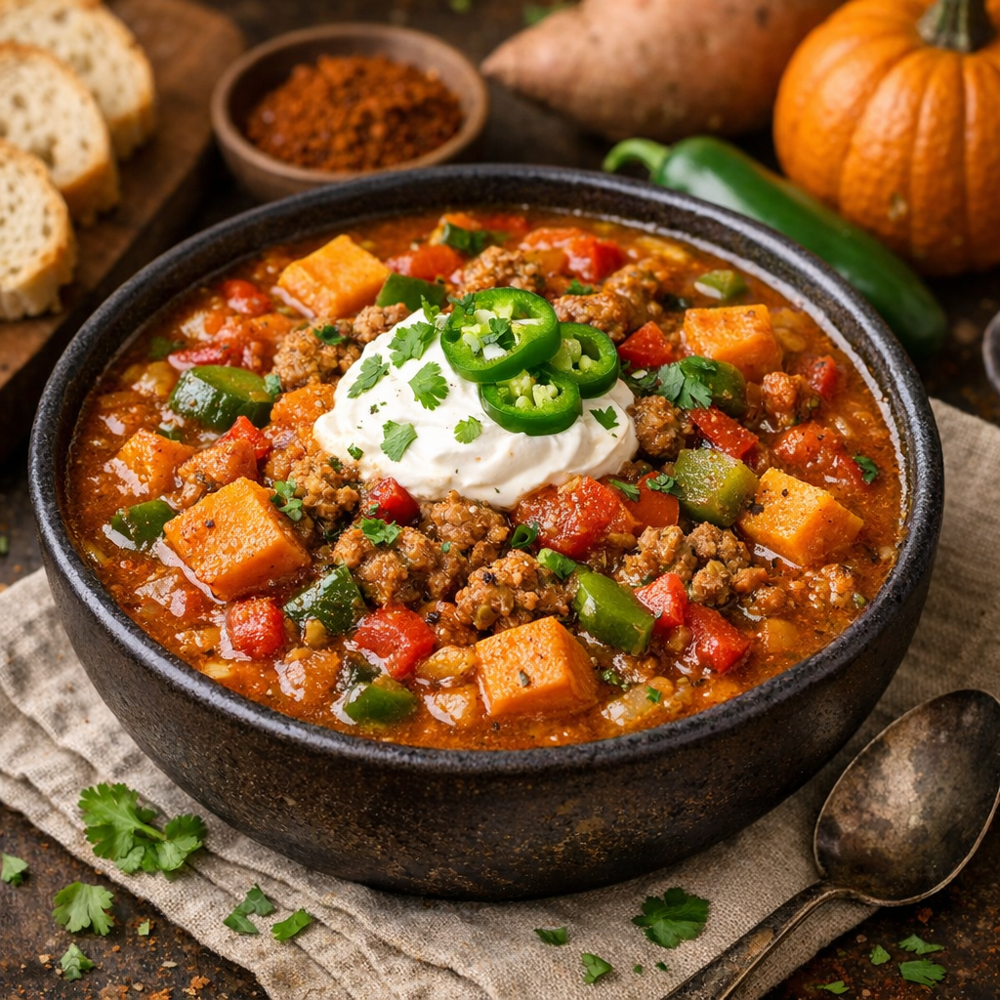

Sweet Potato Pumpkin Chilli Recipe

Description:
Sweet Potato Pumpkin Chili is a hearty, fall-inspired chili featuring Italian sausage, sweet potatoes, and pumpkin puree simmered with fire-roasted tomatoes, colorful bell peppers, and jalapeño. Seasoned with warming spices like chili powder, chipotle, coriander, and cinnamon, it's a naturally gluten-free one-pot meal with a unique sweet-and-savory flavor profile.
This dish is gluten free without effort.
Ingredients:
- 1# Sweet Italian Ground Sausage
- 1 Yellow Onion Diced
- 3 Cloves of Garlic Minced
- 1 Red Bell Pepper Diced
- 1 Green Bell Pepper Diced
- 1 Jalapeno Fine Diced
- 1 Can of Pumpkin Puree
- 1 Can of Fire Roasted Diced Tomatoes
- 2.25 Cups of Low Sodium Chicken Broth
- 3 Sweet Potatoes 3/4" Cubes
Seasonings to Taste:
- Chili Powder
- Chipoltle Chilli Powder
- Groound Coriander
- Onion Powder
- Garlic Powder
- Cinnamon
- Italian Seasoning
- Salt
- Pepper
Steps:
- Set stovetop to medium heat, once pot is heated add Sausage broken into small clumps.
- Agitate sausage until well dispersed then add diced onion. Continue agitating mixture.
- When the sausage is nearing a complete state add peppers and garlic.
- When the sausage appears cooked add the Pumpkin Puree, Roasted Tomatoes, Chicken Broth, and Sweet Potatoes.
- Bring the mixture to a boil and then start adding the seasonings too taste, work in increments and take your time as the potatoes will need 10-15 minutes to cook but check them and continue cooking as needed.
*Disclaimer: It is up to the cook to ensure that all of their ingredients are gluten-free and their workspace is free from contamination in order to ensure a gluten free state of the food.